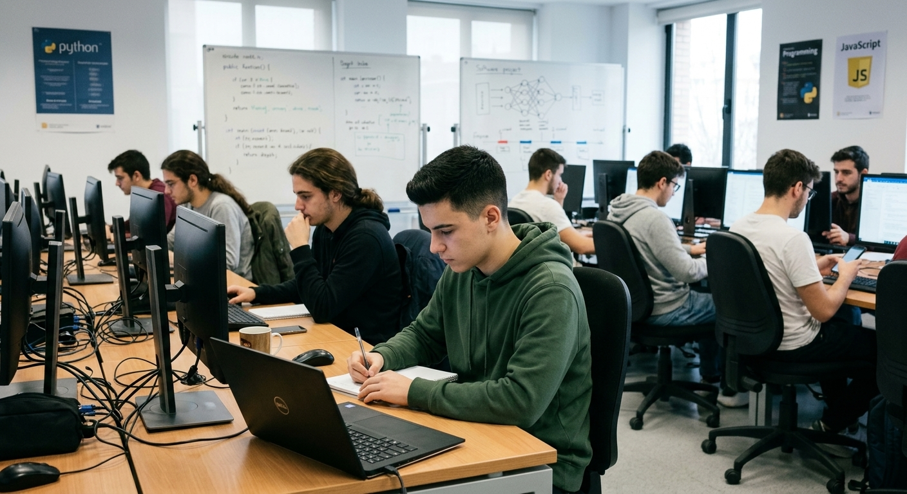

| HORA | Lunes | Martes | Miercoles | Jueves | Viernes |
|---|---|---|---|---|---|
| 8:30-9:25 | Sostenibilidad |  SOR |
SOR | Servicios en red | Digitalización | 9:25-10:20 | SOR | IPE |
| 10:20-11:15 | IPE | Apweb | Servicios en red | SOR | Python |
| 11:15-11:40 | Recreo | ||||
| 11:40-12:35 | Inglés | Apweb | Servicios en red | SOR | Seguridad Informatica |
| 12:35-13:30 | Servicios en red | Python | Seguridad Informatica | Apweb | |
| 13:30-14:25 | Inglés | Servicios en red | |||